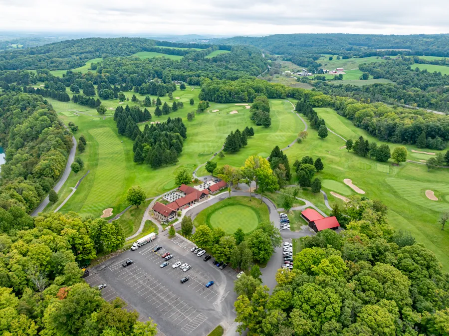
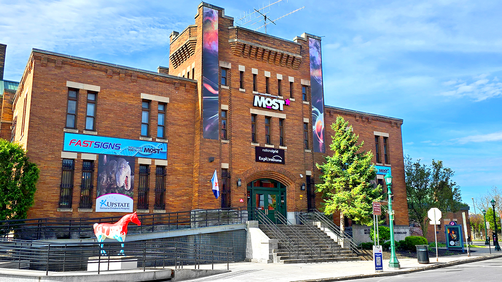
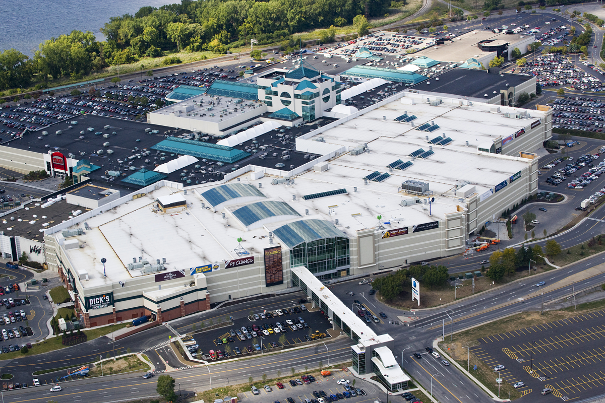

Things To Do in Syracuse
Syracuse is located in the heart of Central New York and offers scenic parks, rich history, and premier shopping.

State Parks and Nature Trails
Outdoor enthusiasts can hike around two glacial meromictic lakes at Green Lakes State Park or walk along the paved shoreline paths at Onondaga Lake Park. Visitors also enjoy waterfalls and wooded limestone trails at Chittenango Falls and Clark Reservation State Park.
Don't forget to check seasonal trail conditions before heading out.
Must-Visit Local Museums

- Milton J. Rubenstein Museum of Science & Technology (MOST)
- Erie Canal Museum
- Everson Museum of Art
Destiny USA Mall

Built on October 10th, 1990, this shopping center covers 2.4 million sq ft and offers 250 shopping, dining, and entertainment venues